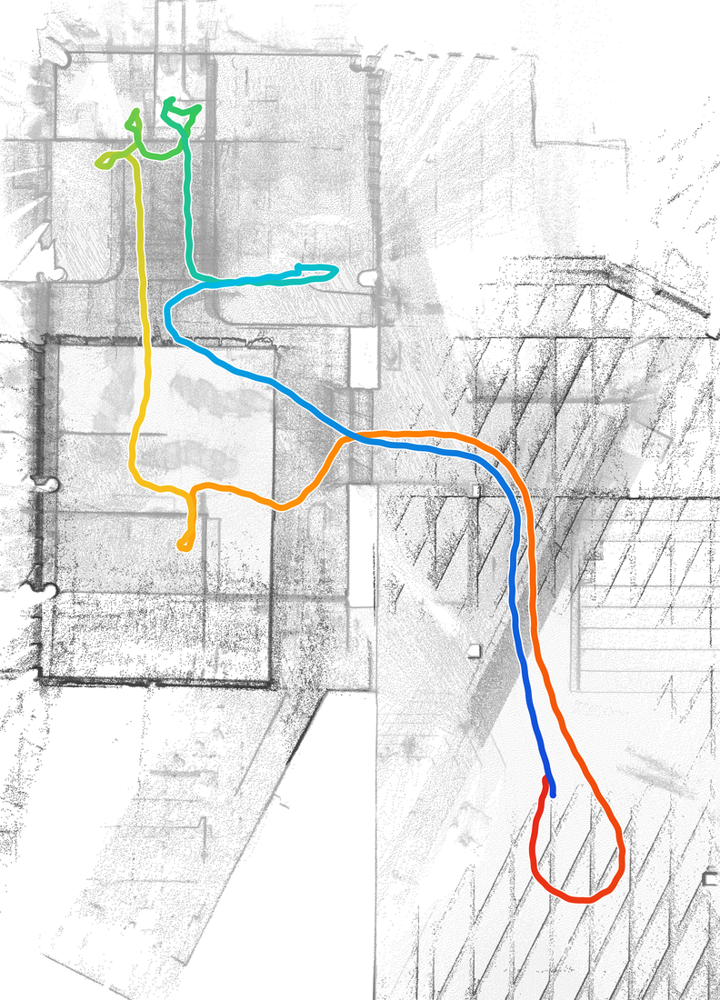
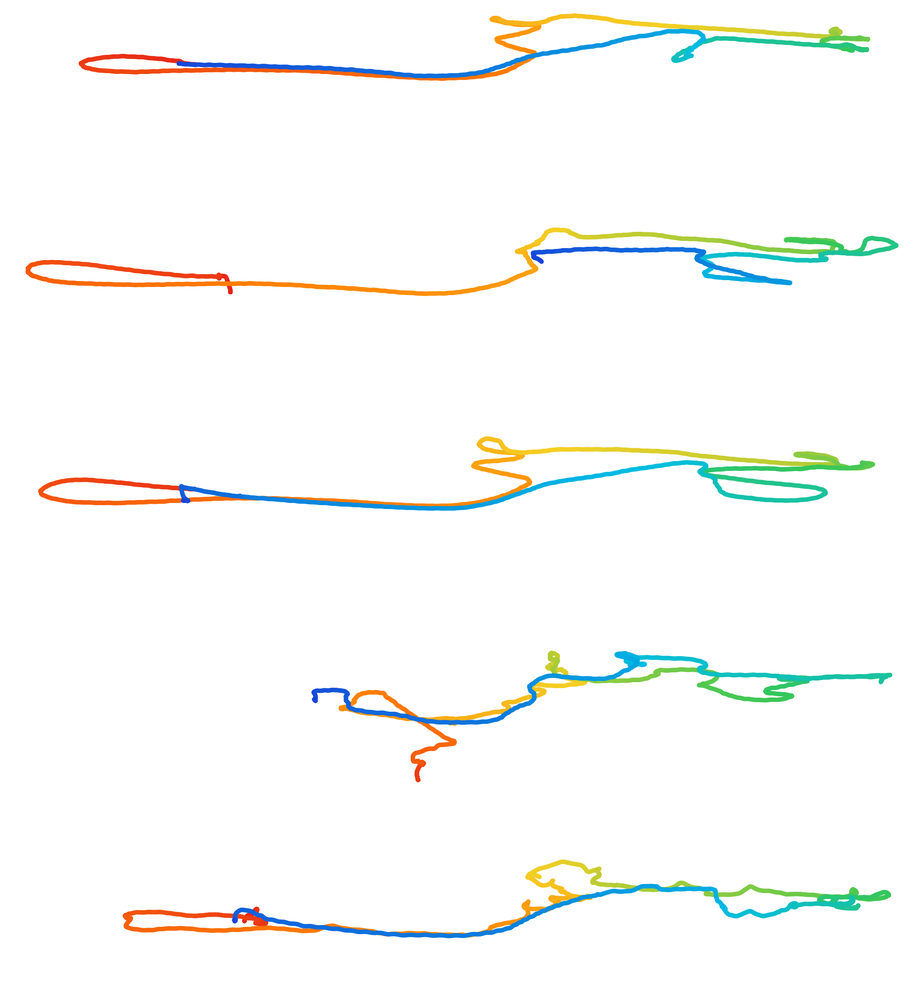
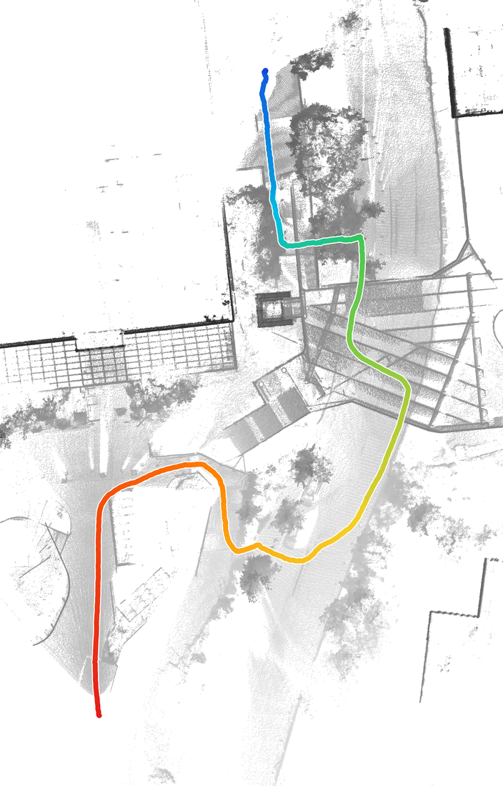
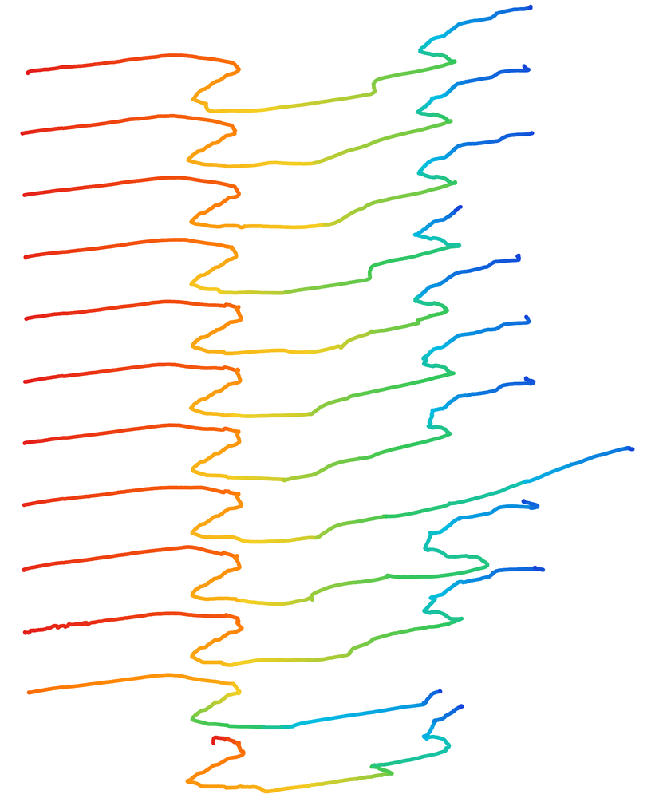
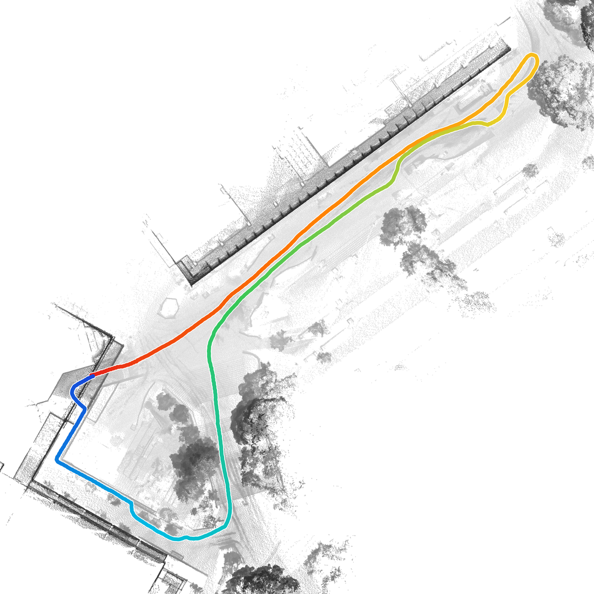
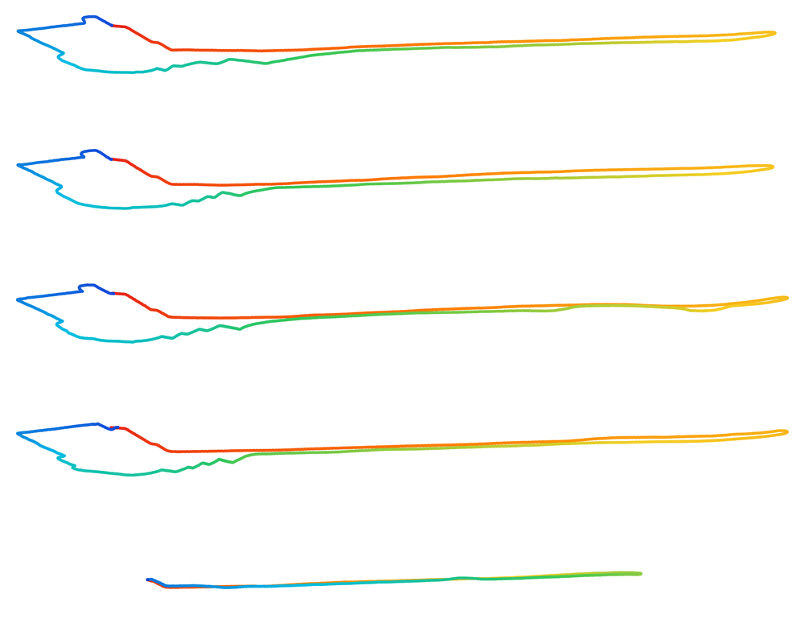

Environments & recordings
Sequences
Repeated visits to three construction sites capture structural evolution, appearance changes, and dynamic activity across weeks to months.
- Construction sites
- 3
- Recording sessions
- 22
- LiDAR scans
- 77,233
- RGB images
- 168,156
Environments and trajectories
Hall covers indoor renovation; Office and Quad cover outdoor construction. The maps below show the routes in each environment, followed by the trajectories of the individual recording sessions.


Map: September 22, 2026


Map: August 18, 2023


Map: September 22, 2026
Trajectory colors run from red at the start to blue at the end of each recording. Maps use independent scales. Vertical spacing between session trajectories is for display only.
Interior renovation over repeated visits
Hall captures an indoor renovation site across five recording sessions. Wall finishes and partitions change, temporary construction materials are removed, and fixtures and furnishings are installed. These changes alter both the geometry and the appearance of the same spaces.
- Changing partitions, finishes, and furnishings
- Additional appearance variation from illumination
- Collection period
- September 5–22, 2026
- Sessions
- 5
- LiDAR scans
- 12,043
- Images
- 12,032
Representative observations from selected sessions; viewpoints may differ between images.
| Session | Collection date | Time of day | Duration | LiDAR scans | Images |
|---|---|---|---|---|---|
| Hall01 | Day | 207 s | 2,071 | 2,069 | |
| Hall02 | Day | 218 s | 2,184 | 2,182 | |
| Hall03 | Night | 247 s | 2,465 | 2,463 | |
| Hall04 | Day | 270 s | 2,695 | 2,693 | |
| Hall05 | Day | 263 s | 2,628 | 2,625 | |
| Hall total | 1,205 s | 12,043 | 12,032 | ||
LiDAR scan counts exclude scans with invalid point timestamps.
Building and bridge construction
Office follows an active construction site where a new building and a bridge connecting it to an existing building were under construction. Twelve sessions follow nearly identical routes across driveways, stairs, and short, narrow forest roads, capturing successive stages of site development.
- Persistent structural changes across nearly three months
- Repeated routes for recognition across recording dates
- Collection period
- May 31–August 18, 2023
- Sessions
- 12
- LiDAR scans
- 46,229
- Images
- 137,178
Representative observations from selected sessions; viewpoints may differ between images.
| Session | Collection date | Time of day | Duration | LiDAR scans | Images |
|---|---|---|---|---|---|
| Office01 | Day | 561 s | 5,612 | 16,832 | |
| Office02 | Night | 348 s | 3,477 | 8,872 | |
| Office03 | Day | 519 s | 5,192 | 15,572 | |
| Office04 | Day | 405 s | 4,046 | 12,144 | |
| Office05 | Day | 337 s | 3,375 | 10,130 | |
| Office06 | Day | 376 s | 3,761 | 11,292 | |
| Office07 | Day | 373 s | 3,731 | 11,200 | |
| Office08 | Day | 438 s | 4,379 | 13,134 | |
| Office09 | Day | 299 s | 2,992 | 8,985 | |
| Office10 | Day | 352 s | 3,520 | 10,571 | |
| Office11 | Night | 290 s | 2,899 | 8,700 | |
| Office12 | Day | 325 s | 3,245 | 9,746 | |
| Office total | 4,623 s | 46,229 | 137,178 | ||
LiDAR scan counts exclude scans with invalid point timestamps.
Dynamic activity and changes in viewpoint
Quad covers an outdoor construction site with construction vehicles, workers, and pedestrian activity. Routes ascend and descend stairs, adding elevation and viewpoint changes to the observations. Five sessions capture the site under changing construction activity and scene conditions.
- Vehicles, workers, and pedestrians across recordings
- Stairs and elevation changes along the routes
- Collection period
- September 17–October 6, 2026
- Sessions
- 5
- LiDAR scans
- 18,961
- Images
- 18,946
Representative observations from selected sessions; viewpoints may differ between images.
| Session | Collection date | Time of day | Duration | LiDAR scans | Images |
|---|---|---|---|---|---|
| Quad01 | Day | 310 s | 3,103 | 3,101 | |
| Quad02 | Day | 450 s | 4,503 | 4,499 | |
| Quad03 | Day | 501 s | 5,013 | 5,009 | |
| Quad04 | Day | 318 s | 3,180 | 3,177 | |
| Quad05 | Day | 316 s | 3,162 | 3,160 | |
| Quad total | 1,895 s | 18,961 | 18,946 | ||
LiDAR scan counts exclude scans with invalid point timestamps.